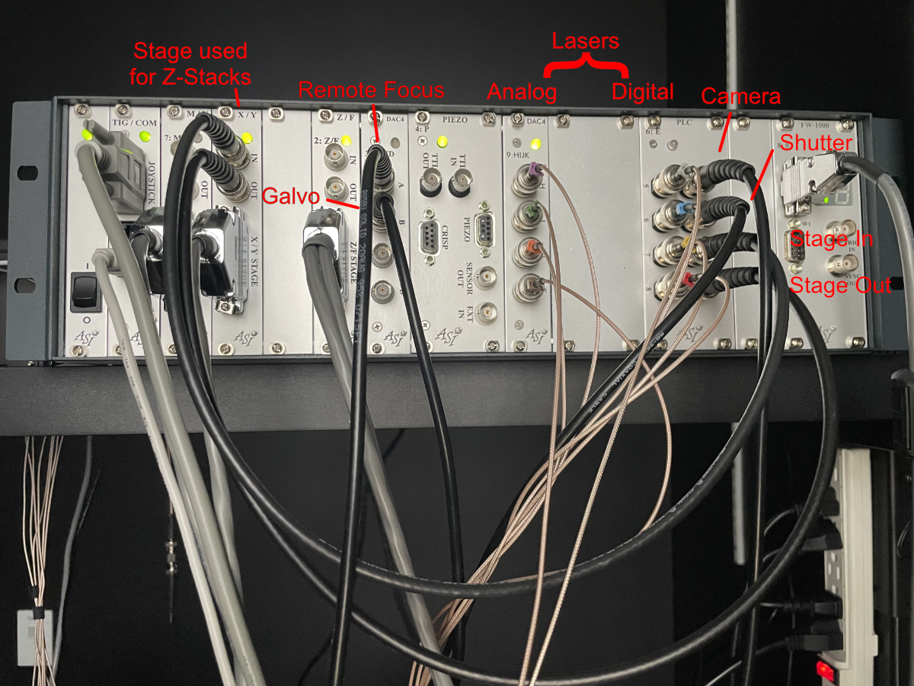
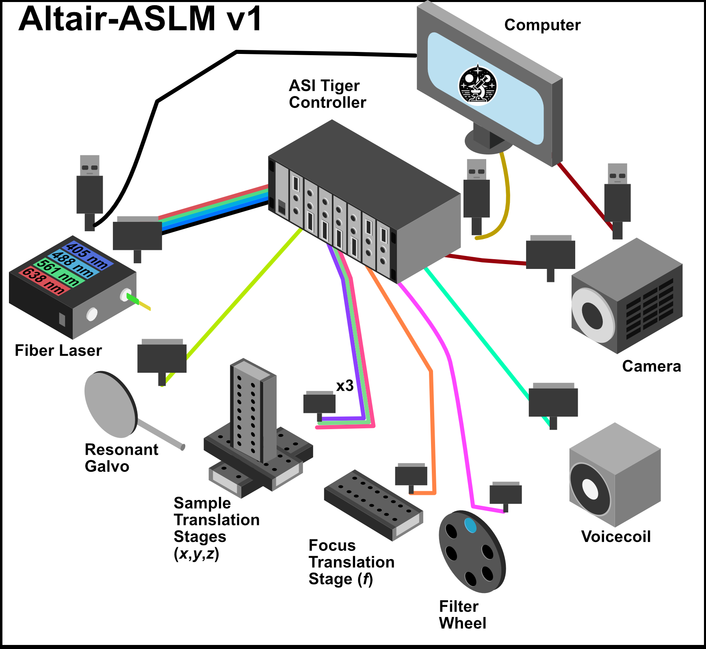

Getting Started
In order to be able to control stage positions, toggle lasers, trigger cameras, and so on, you first need to set up a connection to your hardware. This guide will walk you through the steps necessary to get your system up and running.
Hardware Setup
Unlike other microscopy systems, Altair simplifies control by having only one controller: one apparatus to trigger and drive all necessary devices. This is Applied Scientific Instrumentation’s Tiger Controller, a modular controller with customizable control cards. Our solution calls for a Tiger Controller with the following cards:
TGCOM - Allows joystick control and serial communication from the computer.
3 stage control cards (X/Y, Z/F, M/N).
2 DAC4 cards - Analog signal generators.
TGPLC - Programmable logic controller providing custom timing.
FW-1000 - Filter wheel control.
The order of these cards within the controller does not matter. The software to run the controller is navigate. Navigate supports many microscope configurations, where each configuration is defined by a configuration file. The provided configuration file will delineate the following configuration:
Axis |
Device |
Axis |
Device |
|---|---|---|---|
A |
Remote Focus Voice Coil |
1 |
Camera Trigger |
B |
Galvanometer |
2 |
Laser Shutter |
C |
Remote Focus Reference |
3 |
Stage In* |
D |
Not Used |
4 |
Stage Out* |
H |
405 nm Laser (Analog) |
5 |
405 nm Laser (Digital) |
I |
488 nm Laser (Analog) |
6 |
488 nm Laser (Digital) |
J |
561 nm Laser (Analog) |
7 |
561 nm Laser (Digital) |
K |
638 nm Laser (Analog) |
8 |
638 nm Laser (Digital) |
The stage control card specified for PLC outputs 3 and 4 is the stage that is used for Z-stacks. This allows stage feedback to dictate when the sample is ready for an image. In our configuration, the X hardware stage corresponds to the Z stage within the software. This can be changed to match your stage setup by editing the following part of the configuration file:
Configuration File
microscopes:
microscope_name:
stage:
hardware:
-
type: ASI
serial_number: 001
axes: [x, y, z, f] # software stages
axes_mapping: [X, Y, Z, F] # hardware stages

Figure 1: Tiger Controller with specified cards for Altair
The wiring diagram for the Altair-ASLM with ASI Control is shown below:

Figure 2: Tiger Controller Connections